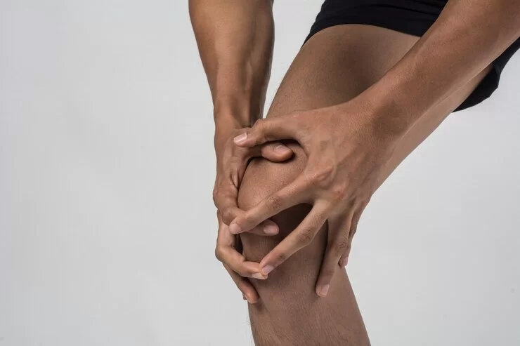

What is the knee replacement surgery success rate in India?
Knee Replacement Also called knee arthroplasty, knee replacement surgery is a medical procedure that aims at replacing your damaged, worn out or overused knee joint with an artificial counterpart, generally called a prosthesis which is made of plastic and metal.
It is a complicated procedure whose success rate depends on vital factors like the expertise of the surgeon, the quality of material with which the knee implants are made, and the patient's overall health and bone strength.
In comparison with global standards, the success rate of knee replacement surgery in India is much higher than in other countries.
Studies have shown that out of all the knee replacement surgeries of all types that are performed in India, almost 90 to 95% of them resulted in positive outcomes, thus showing a high success rate.
Moreover, 85% of patients who underwent successful knee replacement surgeries in India were able to live normal and healthy lives with minimum pain post-surgery. On average, only 1 among 5 patients had complaints regarding pain.
Factors Responsible For The High Success Rate Of Knee Replacement Surgery In India
The patient's preoperative health, the surgeon's expertise, the type and material of surgical implants, the method and technology used, postoperative rehabilitation, the patient's age, activity levels, medical history and ongoing medical conditions (if any) are the major factors determining the success rate of knee replacement surgery.
5 major reasons that make India have a high success rate of knee replacement surgeries are given below.
1. Skilled Surgeons
India has become a budding hub of a large number of highly skilled, qualified, and experienced orthopedic surgeons who have mastered the art of providing effective and long-lasting knee replacement procedures of all types and for patients of all ages.
Orthopaedic surgeons in India receive extensive training which increases their practical knowledge. It ultimately helps them to stay more informed about the latest trends, technologies, and advancements to perform highly precise surgical procedures efficiently by causing minimum pain and discomfort to the patient. Hence, the success rate of knee replacement surgeries is high in India.
2. Advanced Technology
The hospitals that provide knee replacement surgeries in India are completely equipped with all the necessary facilities and technologically advanced tools and equipment that aid in better, more comfortable treatment.
Some examples of top-notch technology which is utilised for the provision of knee replacement surgeries include
- Navigation systems with computer-based assistance devices
- Robot-operated surgical platforms
Other than these, all well-known surgery hospitals in India offer high-quality medical facilities such as
- Technologically advanced operating rooms
- Clean and hygienic environment
- Modern infrastructure
The surgical environment that is not only safe and free of contamination but also feels comfortable for the patient.
Hence, the utilization of advanced surgical technology together with the skills of expert orthopaedic surgeons improves the precision and accuracy of knee replacement surgery ultimately producing better outcomes.
3. A Detailed Preoperative Evaluation
Every patient is given a thorough examination before surgery. This analysis helps in the determination of the patient's overall health status, medical history, the presence of any ongoing disease and related medications, and much more.
It is crucial because it assists in customizing the treatment and planning the surgery according to the individual requirements of the patient. Thus, a comprehensive evaluation helps to make the surgeon aware of and take steps to eliminate the chances of complications along with an improvement in the post-operative recovery steps.
4. Rehabilitation Programs
After the patient is given knee replacement implants, the journey of recovery from the surgery and ultimately adapting to the prosthetic knees as a part of their daily life begins.
Hospitals in India take various steps to ensure that the patient recovers quickly and gains back his mobility and knee functioning as soon as possible.
For this, a combination of one or more types of activities might be recommended as a part of the rehabilitation program. Examples include physical therapy and exercises that promote better movement.
5. Cost Effectiveness
The last and the most prominent reason why the success rate of knee replacement surgery in India is comparatively much higher than in other countries is cost-effectiveness.
All types of knee replacement surgeries are fairly priced in India and thus they are much more affordable than in Western countries. So, the fact that patients can easily avail excellent quality of services at a cheap rate attracts patients from all over the world.
It ultimately increases India's expertise in knee replacement surgeries which directly contributes towards a high success rate.
The Bottom Line
In conclusion, while the above factors contribute a lot towards the success of knee replacement surgery, it is crucial to consult a good orthopaedic surgeon for personalized guidance and advice along with a complete diagnosis of your condition to get the best treatment. Remember that, a surgeon with an expert team and advanced technology automatically increases the chances of a successful one replacement surgery.
For Appointments
Call: 9989635555
Visit: www.drjawadortho.com